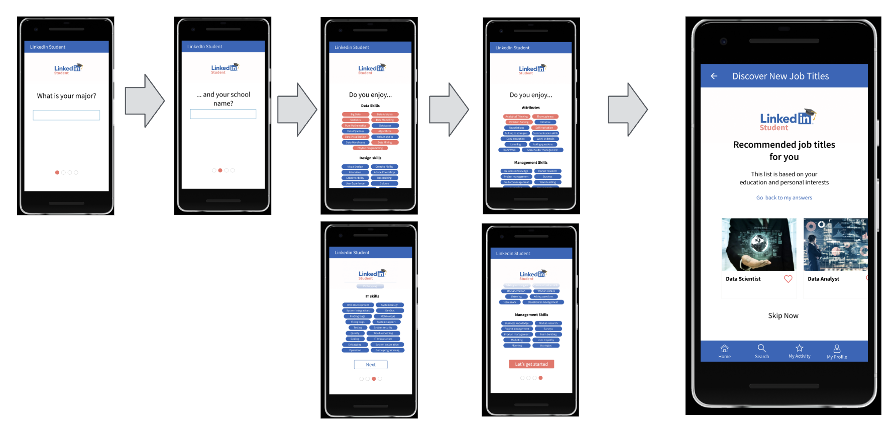
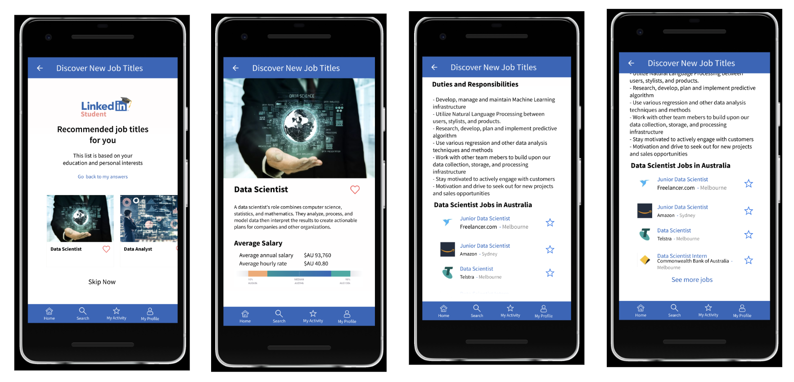

Linkedin Student App
Linkedin is full of job opportunities for any level of positions. Our corporate customers complain for not reaching our right applicants for entry level positions
The new graduates are pretty overwhelmed and frustrated with being inexperienced in job seeking.
What new grads need is more than a jobs directory. Our customised solution for Students will provide a full support to the new graduates in their job seeking journey
College students need professional help in their job search
Number of Graduates in US in 2019
Associate Degree recipients
990 thousand
Bachelor Degree recipients
1.9 million
Master Degree recipients
820 thousand
Doctorate Degree recipients
184 thousand
NUMBER OF GRADUATES
There are thousands of openings for new graduates 3.4 Million entry position
In 2019, top industries new grads are getting hired into:
Average Debt per Borrower in each year’s graduating class
Unemployment rate of recent graduates in US
The app aims to help the user find his/her first job out of school, so the target market is the new grads or soon-to-be-grads.
According to 2019 data, the number of new grads is 3.9 million in 2019 only in US. (Source:educationdata.org)
Two types of subscription will be available:
3.9 million new grads in the US $ 9.90 per month
Total Addressable Market: = ARPU x total number of users in the market = ($9.90 per month) x (12 months) x3.9 million = $ 463.32 million = 0.463 billion
Linkedin Student App will be a tailored solution for new grads or soon-to-be-grads to guide them through the very first step of their professional life.
✔ LinkedIn Student Resume Builder ✔ Get 5 career tips everyday ✔ Free Soft Skill trainings in LinkedIn Learning ✔ Who’s viewed my profile ✔ Applicant insights ✔ Instant access to salary insights ✔ Training suggestions based on applied positions ✔ Online training videos
✔ Featured Applicant ✔ 5 Free InMail per month ✔ Personal Career Coach ✔ 10% discount at LinkedIn Learning ✔ Unlimited profile search
Hybrid (Android + IOS) No Web Version
Login FeaturesEmail user Login Gmail Login Linkedin login
Utility FeaturesJob Title Feeds Linkedin Integration User profiles, Resume build and edit Company profiles
User Administration App Analytics
UX FeaturesPush notification Job Openings feed
6 months of Development x 10K x 15 MVP features = $ 900 K
Acc to the Pew Research Center 2018 Social Media Use study 50% of college graduates in the US has a Linkedin account. From Linkedin statistics, 39% of Linkedin users are paid customers. (source: kinsta.com)
With a similar approach, if 40% of this amount subscribes to LinkedIn Student Premium service. Number of graduates in US : 3.9 million Projected price of Premium Student membership: $ 9.90
($9.90 per month) x (12 months) x 3.9 million x 50% x 40% = $ 92 million per year = $ 0.092 billion per year
OKR 1: Brand awareness and user retention
OKR 2: New grads will be hired through the advertisements in LinkedIn
Showing relevant content to the user Rationale: After discovering what the user really likes and what s/he is passionate about, it is time to show the user the relevant job titles s/he needs to learn more about.
User Story
As a Linkedin Student App user, I want to see the job title recommendations matching with my major and interests, so that I can start looking for a job which matches not only with my skills and also with my passion.
Design
Acceptance Criteria Given the user signed up to Linkedin Student App, When the user writes the name of the major s/he studies as “Computer Science” And the user marks the topics s/he is interested in “Data Analysis”, “Big Data”, “Pure Mathematics” as Data Skills, “Analytical Thinking”, “Problem Solving” as Attributes Then this information is saved on user’s profile And the user is redirected to the “Recommended Job Titles” screen showing “Data Scientist”, “Data Analyst”, “Machine Learning Specialist” and “BI Analyst” as recommended job titles.
Assumptions
User Story As a Linkedin Student App user, I want to see the duties and responsibilities, average salary range and job openings in Australia about a recommended job title, so that I can learn more about the job title I am going to apply for.
Design
Acceptance Criteria Given the user is on “Recommended Job Titles For You” screen And “Data Scientist” job title is recommended to the user, When the user clicks on the “Data Scientist” card, Then the user is redirected to the Job Title Description screen for “Data Scientist” And a short description for the job title is shown on the screen, And average salary rage is shown on the screen, And duties and responsibilities are shown on the screen, And first 5 job openings in Australia for Data Scientist role is listed on the screen.
Assumptions Since the pilot run will be only available in Australia